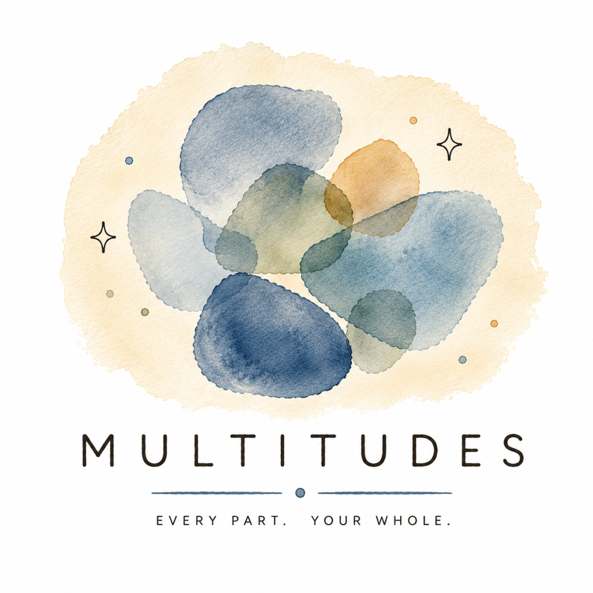

Before — Set intention
Multitudes sits with you in the days before, helping you name what you're actually asking the experience to show you. Not a goal. A question.

Your email, nothing else. We won't share it. Unsubscribe anytime.
The problem
Most people leave a ceremony, a clinic, or a retreat with something fragile and luminous — and within weeks, the old patterns are back. Not because the experience wasn't real. Because integration is its own practice, and almost no one teaches it.
Multitudes sits with you in the days before, helping you name what you're actually asking the experience to show you. Not a goal. A question.
Tools for the day itself: nervous-system regulation, somatic anchors, a gentle place to capture what arises without breaking the spell.
Daily reflection, parts work, breathwork, and a living toolkit that updates with you. Insight becomes practice. Practice becomes change.
What's inside
Our approach
Multitudes is informed by Internal Family Systems, Polyvagal Theory, somatic experiencing, and integration protocols developed over decades by clinicians and researchers. We don't invent frameworks. We make the existing ones easier to live with.
"I am large, I contain multitudes."
— Walt Whitman
Honest
Multitudes is a wellness and reflection tool — a companion, not a clinician. It doesn't diagnose, treat, or replace mental health care. If you're in crisis, we'll point you to people who can help, every time.
Your reflections stay yours. Export them. Delete them. We don't sell them. Ever.
Join the waitlist and we'll let you know when Multitudes is ready.
Your email, nothing else. We won't share it. Unsubscribe anytime.